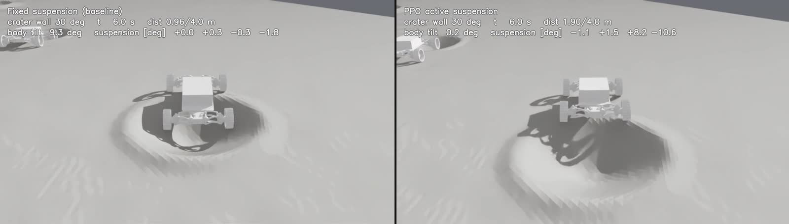
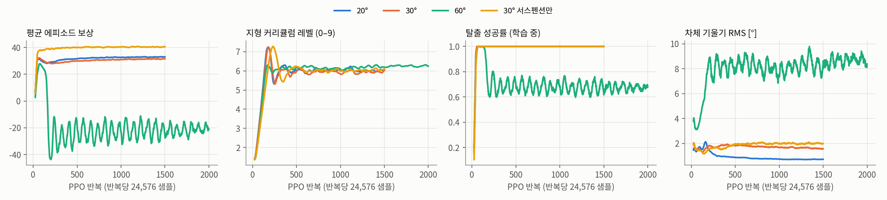
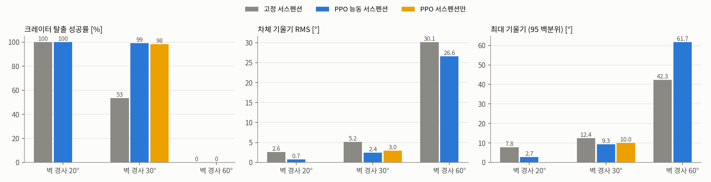
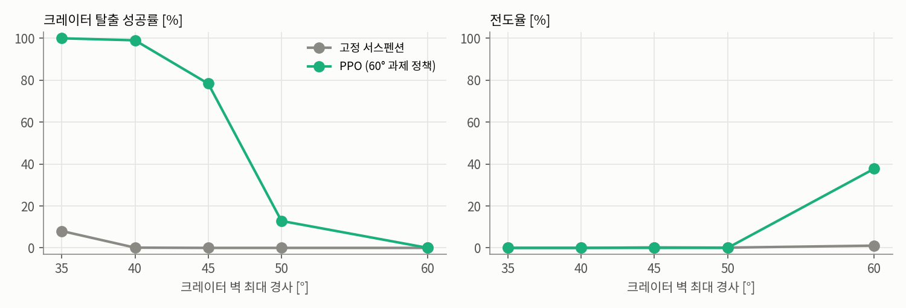
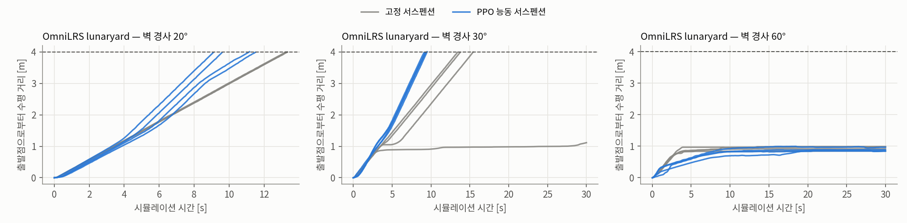

달 크레이터 탈출을 위한 PPO 기반 능동 서스펜션 제어¶
1024 병렬 환경 강화학습과 OmniLRS lunaryard 검증
연구 보고 · 현대자동차 L-Project · 기준일 2026-10-28
요약
L-Project 달 탐사 로버는 4륜 독립 조향과 4축 능동 서스펜션을 갖춘 12축 차량입니다. 그러나 현재 주행 제어는 서스펜션 지령을 0으로 고정하며, 2026-08-25 시뮬레이션에서는 크레이터 안에서 같은 휠 속도 지령만으로 탈출하지 못한 사례(slip ratio 약 100 %)가 기록되었습니다.
본 연구는 서스펜션 4축과 휠 속도 보정 4축을 출력하는 정책을 PPO로 학습해, 크레이터 탈출과 안정 주행을 함께 달성하는 것을 목표로 합니다. 학습 지형은 OmniLRS lunaryard의 크레이터 spline 프로파일 29종을 그대로 사용하고, 벽 최대 경사를 20°·30°·60°로 맞춘 세 과제를 1024개 병렬 환경(Isaac Lab, RTX 5080, 약 22,300 step/s)에서 각각 학습했습니다.
목표 경사 고정 평가(과제당 크레이터 832 에피소드)에서 고정 서스펜션 대비 결과는 다음과 같습니다.
| 벽 경사 | 탈출률 (고정 → PPO) | 전도율 (고정 → PPO) | 차체 기울기 RMS (고정 → PPO) |
|---|---|---|---|
| 20° | 100.0 % → 100.0 % | 0.0 % → 0.0 % | 2.6° → 0.7° |
| 30° | 53.5 % → 99.2 % | 0.0 % → 0.0 % | 5.2° → 2.4° |
| 60° | 0.0 % → 0.0 % | 1.1 % → 37.7 % | 30.1° → 26.6° |
벽 경사를 35~50°로 나눈 평가에서 60° 과제 정책은 고정 서스펜션이 0~8 %에 그친 구간을 각각 100 % · 99 % · 78 % · 13 %로 탈출해, 탈출률 50 %가 되는 경사를 약 31°에서 약 47°로 넓혔습니다. 반면 60°에서는 두 조건 모두 탈출하지 못했고, PPO는 전도율이 37.7 %로 고정 서스펜션(1.1 %)보다 높았습니다. 학습 환경 밖인 OmniLRS lunaryard 플랜트에서는 30° 크레이터에서 고정 서스펜션 3/4, PPO 4/4가 탈출했고, 20°에서는 둘 다 4/4가 탈출하되 PPO가 기울기 RMS를 절반 수준으로 낮췄습니다.
모든 결과는 강체 지형 시뮬레이션 결과이며 실물 로버·월면토 검증이 아닙니다. 한계는 8절에 정리했습니다.
진행 중 — 달 경사로 20° · 30° · 60° 등판 (2026-10-28)
과제를 크레이터 탈출에서 직선 경사로 등판으로 넓히고 있습니다. 평지 접근 → 경사로(수평 4 m) → 상단 평지 지형에서 경사로 발 1 m 앞에서 출발해, 로버 전체가 상단에 올라서면 성공입니다. 보상은 본문의 v3(과속 벌점 + IMU)을 그대로 씁니다. 아래는 학습이 끝난 20° 정책의 중간 결과 영상입니다(옆에서 본 경사 단면, 왼쪽 고정 서스펜션 · 오른쪽 PPO). 이 에피소드에서 고정 서스펜션은 정상 꺾임(5 m 지점) 직전에서 멈춰 40 s 안에 오르지 못했고, PPO는 23.8 s에 상단에 올랐습니다. 영상 한 편은 한 에피소드입니다.
30° 중간 결과. 30° 정책을 경사 30°로 고정한 지형에서 빠르게 확인했습니다(256 env, 경사로 208 에피소드).
| 30° 경사로 | 고정 서스펜션 | PPO (30° 정책) |
|---|---|---|
| 등판 성공률 | 0 % | 100 % |
| 전도율 | 0 % | 0 % |
| 오른 높이 평균 (경사로 높이 2.31 m) | 1.91 m | 2.12 m |
| 등판 시간 중앙값 | — | 20.1 s |
고정 서스펜션은 경사로가 상단과 만나는 꺾임에서 앞바퀴만 상단에 걸치고 차체가 걸려 멈춥니다. 아래 영상(22 s 시점)에서 고정 서스펜션은 꺾임에 걸려 차체가 24° 기울어 있고, PPO는 서스펜션 관절을 5~11° 움직여(FL +10.9° · FR −10.1° · RL +5.1° · RR −7.3°, 좌우 관절 부호 규약 그대로) 꺾임을 넘으며 차체 기울기를 1°로 유지합니다. 이 에피소드에서 PPO는 24.4 s에 상단에 올랐습니다. 같은 정책을 40°에 두면 0 %입니다(학습 범위 10~30° 밖). 40° 이상은 학습 중인 60° 과제 정책으로 평가합니다.
정식 평가(경사당 약 820 에피소드), 60° 결과, OmniLRS 등가 경사 검증은 학습이 끝나는 대로 이 페이지에 반영합니다.
프로젝트 상세 · 로버 USD 설명 · 지형 변형 엔진 분석 · 차년도 과제 제안
1. 서론¶
1.1 배경 — 고정 서스펜션과 크레이터 고착¶
로버의 서스펜션은 축당 상·하부 암으로 구성된 4절 평행 링크이며, 상부 암 조인트
(body_to_upper_arm_sus_*)가 위치 지령을 받는 액추에이터입니다. 12축 계약상 서스펜션은
±0.35 rad(±20.05°) 범위의 위치 제어 축이지만, 현행 주행 제어(텔레옵·Nav2 경로)는 이 축에
항상 0을 지령합니다. 본 문서에서 「고정 서스펜션」은 이 상태를 의미합니다.
2026-08-25 Isaac Sim 시험에서 로버가 크레이터에 진입한 뒤 네 휠을 +2.0 rad/s로 구동해도 이동 속도가 0.01 cm/s에 그쳤습니다(차체 pitch −11.2°, 서스펜션 토크 RL −41.3 N·m, 나머지 약 −13 N·m). 하중이 한 휠에 편중된 상태에서 같은 휠 속도 지령만으로는 탈출하지 못한 사례입니다.
1.2 목표와 기여¶
- 크레이터 탈출 — 크레이터 바닥에서 출발해 벽을 넘어 4 m 밖으로 나갑니다.
- 안정 주행 — 탈출 과정과 평지 주행에서 차체 기울기·각속도·휠 하중 편차를 줄입니다.
본 연구의 기여는 다음과 같습니다.
- OmniLRS 크레이터 생성기를 경사 지정형 Isaac Lab 지형으로 이식해 1024개 환경을 병렬화했습니다(4.1절).
- 실기에 있는 신호(IMU·조인트 상태·서스펜션 토크)만 쓰는 정책과, 지상 진실을 쓰는 critic의 비대칭 actor-critic 구조와 보상 설계를 제시합니다(4.3~4.5절).
- 경사 20°·30°·60° 세 과제의 학습 결과와 서스펜션 단독 ablation, 그리고 학습 환경 밖인 OmniLRS lunaryard 실제 플랜트에서의 검증 결과를 보고합니다(5~6절).
2. 대상 시스템¶
| 항목 | 값 | 출처 |
|---|---|---|
| 축 구성 | 구동 4(속도) · 조향 4(위치) · 서스펜션 4(위치), 순서 FL·FR·RL·RR | 12축 계약 axes.py |
| 윤거 / 축거 / 휠 반경 | 1.2867 / 1.4910 / 0.2133 m | final_rover_HH asset 실측 |
| 총질량 / 차체 | 450 / 302 kg | NASA VIPER 공개 제원 참조 추정 |
| 서스펜션 한계 | ±0.35 rad (암 길이 0.247 m) | asset 조인트 한계 |
| 서스펜션 drive | kp 2865 N·m/rad · kd 1146 N·m·s/rad · 최대 1000 N·m | asset (PhysX 환산값) |
| 휠 속도 한계 | 10 rad/s | 12축 계약 |
| 중력 | 1.62 m/s² | 달 |
| 휠–지면 마찰 | 정지 0.90 / 동 0.70 | HILS 월면토 마찰 설정 |
정책은 HILS와 같은 asset(Rover_hyundai_omnilrs.usd)과 같은 조인트 drive 값을 사용합니다.
4절 링크의 종동 조인트 drive도 asset 값을 유지했습니다. 이 drive가 서스펜션을 잠그는지 확인하기 위해
0.28 rad 지령을 asset drive와 자유 힌지 두 조건으로 비교했으며, 두 조건 모두 0.25~0.30 rad에 도달해
서스펜션 운동을 구속하지 않음을 확인했습니다(2026-10-28).
3. 문제 정의¶
| 구분 | 정의 |
|---|---|
| 초기 상태 | 크레이터 중심 바닥(±1 m 최고 지점 + 0.15 m)에서 정지, 방위각 무작위 |
| 주행 지령 | 지면 속도 v_cmd ~ U(0.2, 0.4) m/s, 조향 0(직진) |
| 성공 | 출발점에서 수평 거리 4.0 m 이상(크레이터 림 반경 최대 1.74 m, 후륜이 림을 넘는 거리) |
| 실패 | 차체 기울기 50° 초과(전도) 또는 지형 이탈 |
| 시간 제한 | 30 s (시뮬레이션 시간) |
크레이터 중심에서 직진하면 진행 방향이 곧 반경 방향이므로 조향을 0으로 고정했습니다. 조향을 함께 학습하는 경우는 8절의 범위 밖 항목입니다.
4. 학습 환경 설계¶
4.1 OmniLRS 크레이터 지형의 경사 지정형 재현¶
OmniLRS lunaryard는 크레이터를 반경 방향 spline 프로파일(29종) × 반경으로 생성하고, 0.85~1.0의 타원 비, 0.95~1.0의 각도별 반경 변형, 무작위 회전을 더합니다. 본 환경은 이 생성 절차를 그대로 따르되 깊이 정의만 바꿨습니다.
- OmniLRS: 깊이 = 프로파일 × 반경 ×
z_scale— 벽 경사가 프로파일에 따라 15~35°로 흩어집니다. - 본 환경: 프로파일의 최대 기울기가 목표 경사와 같아지도록 깊이를 스케일합니다. 같은 「30°」 과제 안에서도 29종 프로파일의 형상 차이는 유지됩니다.
| 항목 | 값 |
|---|---|
| 크레이터 반경 | 2.5 m (lunaryard 최대 등급, 2026-08-25 고착 사례와 같은 등급) |
| 림 반경 | 0.49~0.59 R (프로파일별) |
| 지형 격자 | 0.1 m, 타일 10 × 10 m, 10단계 × 16열 = 160 타일 |
| 기저 잡음 | OmniLRS 고주파 잡음 방식, ±1 cm |
| 타일 구성 | 크레이터 80 % · 평지 20 %(소형 크레이터 r 0.25~0.5 m, 2~8개 — 안정 주행 학습용) |
| 커리큘럼 | 20° 과제 5→20°, 30° 과제 10→30°, 60° 과제 20→60°(레벨 0→9) |
| 벽 경사 | 깊이(대표, R 2.5 m) |
|---|---|
| 20° | 0.30 (0.14~0.35) m |
| 30° | 0.47 (0.22~0.56) m |
| 60° | 1.40 (0.67~1.67) m |

4.2 시뮬레이션 설정¶
| 항목 | 값 |
|---|---|
| 시뮬레이터 | Isaac Sim 5.0 + Isaac Lab 0.54 (PhysX GPU) |
| 물리 / 정책 주기 | 200 Hz / 50 Hz (HILS /sim/axes_cmd 주기와 같음) |
| 병렬 환경 | 1024 |
| 도메인 무작위화 | 휠 마찰 정지 0.75~1.0·동 0.55~0.80, 차체 질량 ×0.85~1.15 |
4.3 관측 — 비대칭 actor-critic¶
정책(actor)은 실기 로버에 있는 신호만 받습니다. 지상 진실이 필요한 값은 학습 중 가치 함수(critic)에만 줍니다.
| 관측 | 차원 | actor | critic | 실기 출처 |
|---|---|---|---|---|
| 중력 방향(차체 좌표) | 3 | ✓ | ✓ | IMU 자세 |
| 차체 각속도 | 3 | ✓ | ✓ | IMU |
| 서스펜션 각 / 각속도 | 4 + 4 | ✓ | ✓ | 엔코더 |
| 휠 각속도 | 4 | ✓ | ✓ | 엔코더 |
| 서스펜션 토크 | 4 | ✓ | ✓ | 드라이버 전류 |
| 속도 지령 / 직전 행동 | 1 + 8 | ✓ | ✓ | 제어기 내부 |
| 차체 선속도 | 3 | ✓ | (지상 진실) | |
| 휠 수직 하중 | 4 | ✓ | (지상 진실) | |
| 출발점 거리 · 진행 속도 · 차체 접촉 · 지형 레벨 | 4 | ✓ | (지상 진실) | |
| 합계 | 31 | 42 |
4.4 행동¶
| 행동 | 차원 | 변환 |
|---|---|---|
| 서스펜션 각 지령 | 4 | 0.35·a [rad], 변화율 1 rad/s 제한 |
| 휠 속도 보정 | 4 | (v_cmd / r)·(1 + 0.75·a), 0~10 rad/s |
| 조향 | — | 0 고정 |
a ∈ [−1, 1]. 서스펜션 변화율 1 rad/s는 액추에이터 사양이 없어 둔 가정값입니다. ablation(서스펜션 단독)은 휠 보정 계수를 0으로 두어 휠이 항상 공칭 속도로 돕니다.
4.5 보상 설계¶
보상은 「탈출」 항과 「안정」 항, 그리고 정규화 항으로 구성되며, 매 스텝 값에 제어 주기(0.02 s)를 곱해 합산합니다(일회성 항 제외).
| 구분 | 항 | 식 | 가중치 | 설계 의도 |
|---|---|---|---|---|
| 탈출 | 진행 | clip(v_fwd, −0.5, v_cmd) / v_cmd | +2.0 | 출발 방위 방향 수평 속도. v_cmd 초과분은 보상하지 않아 과속을 막습니다 |
| 탈출 | 성공 | 4 m 도달 시 1회 | +20 | 탈출 자체를 목표로 고정합니다 |
| 안정 | 기울기 | 차체 기울기 각 θ [rad] (선형) | −3.0 | 차체를 수평으로 유지합니다. 5°에서 0.26/s로 진행 항과 같은 자릿수입니다 |
| 안정 | 각속도 | ω_x² + ω_y² | −0.5 | roll·pitch 흔들림을 억제합니다 |
| 안정 | 접지 상실 | 정적 하중 10 % 미만인 휠 비율 | −1.0 | 네 휠 접지를 유지합니다 |
| 안정 | 하중 편차 | 휠 하중의 변동계수(std/mean) | −0.5 | 고착 사례의 하중 편중을 직접 겨냥합니다 |
| 안정 | 슬립 | 평균 |ω·r − v_x| / v_cmd | −0.5 | 헛바퀴를 억제합니다 |
| 안정 | 차체 접지 | 차체–지면 접촉 시 1 | −2.0 | 하부 걸림을 피합니다 |
| 정규화 | 행동 변화 | Σ(Δa)² | −0.02 | 지령 떨림 억제 |
| 정규화 | 서스펜션 토크 | Σ τ² | −2×10⁻⁶ | 에너지 |
| 정규화 | 자세 | mean((q / 0.35)²) | −0.2 | 필요할 때만 중립에서 벗어나게 합니다 |
| 정규화 | 한계 근접 | Σ max(|q| − 0.32, 0) / 0.03 | −0.5 | 조인트 스톱 충돌 방지 |
| 종료 | 전도·이탈 | 1회 | −20 | 실패 회피 |
설계 근거. 진행 항만 두면 정책은 차체를 크게 기울이거나 휠을 헛돌려서라도 전진하려 합니다. 안정 항은 그 경로를 막는 제약으로 작동하며, 특히 하중 편차 항은 1.1절의 고착 원인 가설(하중 편중)을 보상에 직접 반영합니다. 기울기 항과 자세 항은 첫 학습의 실패를 고친 결과입니다(4.7절). 휠 하중과 출발점 거리는 실기에서 직접 측정할 수 없지만 보상 계산은 학습 중에만 필요하므로 문제가 되지 않습니다.
4.6 PPO 설정¶
| 항목 | 값 |
|---|---|
| 구현 | rsl_rl 3.0.1 OnPolicyRunner |
| 네트워크 | actor·critic 각각 MLP 256-128-64, ELU, 관측 정규화 |
| 수집 | 1024 환경 × 24 step = 24,576 샘플/반복 |
| 갱신 | 5 epoch × 4 미니배치, clip 0.2, 적응 학습률 5×10⁻⁴(목표 KL 0.01) |
| 할인 / GAE | γ 0.99, λ 0.95 |
| 탐색 | 초기 표준편차 0.6, 엔트로피 0.004 |
| 반복 수 | 20°·30°: 1500, 60°: 2000 (서스펜션 단독 30°: 1500) |
| 학습 시간 | 20° 25분(1500회) · 30° 27분(1500회) · 60° 45분(2000회) · 30° 서스펜션 단독 27분(1500회) |
4.7 첫 학습의 실패 — 기울기 항이 작동하지 않았다¶
첫 학습(2026-10-28 오전)에서는 기울기 항을 중력 벡터의 차체 수평 성분 제곱(g_x² + g_y², 가중치 2)으로 두었습니다. 20° 과제 정책은 탈출 성공률 100 %, 탈출 시간 중앙값 9.5 s로 고정 서스펜션(13.3 s)보다 빨랐지만, 차체 기울기 RMS는 2.6° → 5.8°로 오히려 커졌고 평지에서도 0.3° → 4.7°였습니다(크레이터 832·평지 192 에피소드).
진단 결과 정책은 평지에서도 서스펜션을 약 ±0.2 rad 비대칭으로 둔 채 자세를 계속 바꾸고 있었습니다. 원인은 항의 크기였습니다. g_x² + g_y² = sin²θ 이므로 5°에서 0.0076에 불과하고, 에피소드 합 기준 기울기 항은 −0.006으로 하중 편차 항(−0.11)·서스펜션 토크 항(−0.029)보다 한 자릿수 작았습니다. 정책에게 수평 유지는 사실상 목표가 아니었고, 하중 편차를 줄이려 차체를 기울이는 쪽이 이득이었습니다.
기울기 항을 기울기 각에 선형(가중치 3/rad)으로 바꾸고, 서스펜션 각의 제곱 평균에 작은 자세 항(0.2)을 더해
다시 학습했습니다. 같은 500회 시점의 학습 중 기울기 RMS가 5.1°에서 0.86°로 줄었습니다. 이하 결과는 모두 수정한 보상의 결과입니다.
첫 학습의 평가 결과는 저장소 results/v1_reward에 보존했습니다.
4.8 구현 — 보상 함수와 학습 스크립트¶
환경은 Isaac Lab DirectRLEnv를 상속한 ActiveSuspensionEnv(lrover_rl/env.py)이고, 학습 진입점은 scripts/train.py입니다.
아래 코드는 비공개 저장소 l-project-rl에서 핵심 부분만 발췌했습니다(로깅·통계 집계 줄은 생략).
보상 함수 — _get_rewards(). 제어 주기(20 ms)마다 호출됩니다. 각 항은 4.5절 표와 1:1로 대응하고, 가중치는 env_cfg.py의
w_* 필드입니다. 연속 항에는 제어 주기 dt를 곱하고, 성공·실패는 한 번만 주는 항이라 곱하지 않습니다.
def _get_rewards(self) -> torch.Tensor:
d, dt = self._robot.data, self.step_dt
v_cmd = self._v_cmd.clamp(min=0.05)
v_fwd = self._v_forward() # 출발 방위로 투영한 수평 속도
progress = v_fwd.clamp(-0.5, 1.0).minimum(v_cmd) / v_cmd
overspeed = (v_fwd - 1.05 * v_cmd).clamp(min=0.0) / v_cmd
tilt = torch.acos((-d.projected_gravity_b[:, 2]).clamp(-1.0, 1.0)) # 차체 기울기 [rad], 선형
imu = self._imu.data
ang_rate = torch.sum(torch.square(imu.ang_vel_b[:, :2]), dim=1) # IMU 자이로 roll·pitch
v_w = math_utils.quat_apply(imu.quat_w, imu.lin_vel_b) # IMU 동가속도: 20 ms 속도차
self._imu_acc_dyn = math_utils.quat_apply_inverse(imu.quat_w, (v_w - self._imu_v_prev) / dt)
self._imu_v_prev = v_w
settled = (self.episode_length_buf.float() * dt > 1.0).float() # 스폰 착지 1 s 제외
imu_accel = torch.sum(torch.square(self._imu_acc_dyn), dim=1) * settled
f = self._wheel_forces() # 휠 4개 접촉력 크기, 최근 물리 서브스텝 평균
lift = (f < 0.1 * (self._weight / 4.0).unsqueeze(1)).float().mean(dim=1)
load_cv = f.std(dim=1) / f.mean(dim=1).clamp(min=1.0)
slip = (d.joint_vel[:, self._drive_ids] * WHEEL_RADIUS - d.root_lin_vel_b[:, :1]).abs().mean(dim=1) / v_cmd
... # body_contact, action_rate, sus_* 동일 형식
c = self.cfg
terms = {
"progress": c.w_progress * progress * dt, # +2.0
"goal": c.w_goal * self._success.float(), # +20, 1회
"overspeed": -c.w_overspeed * overspeed * dt, # −10
"tilt": -c.w_tilt * tilt * dt, # −3.0
"ang_rate": -c.w_ang_rate * ang_rate * dt, # −0.5
"imu_accel": -c.w_imu_accel * imu_accel * dt, # −0.2
"lift_off": -c.w_lift_off * lift * dt, # −1.0
"load_cv": -c.w_load_cv * load_cv * dt, # −0.5
"slip": -c.w_slip * slip.clamp(max=2.0) * dt,
... # body_contact, action_rate, sus_torque, sus_pose, sus_limit
"fail": -c.w_fail * self._failed.float(), # −20, 1회
}
return torch.stack(list(terms.values())).sum(dim=0)
이 코드에서 짚어 둘 설계 결정은 네 가지입니다. 모두 앞선 학습에서 실제로 문제가 된 것을 고친 결과입니다.
- 진행 항은 v_cmd에서 자르고, 과속은 따로 벌합니다. 성공 보상은 할인되므로 일찍 도착할수록 커집니다. 과속 항이 없던 첫 학습에서는 정책이 최대 지령 0.4 m/s에 대해 평지에서 0.43 m/s로 달렸습니다.
- 기울기는 각도에 선형으로 벌합니다. 처음 쓴 sin²θ 형태는 10° 아래에서 거의 0이 되어, 하중 편차 항과의 경쟁에서 졌습니다(4.7절).
- IMU 가속도는 20 ms 속도차로 다시 계산합니다. Isaac Lab IMU의
lin_acc_b는 5 ms 서브스텝 미분값이라 휠 접촉 채터가 섞여, 고정 서스펜션이 평지에서 기울기 0.3°로 달려도 4.8 m/s² RMS가 나왔습니다. 스폰 낙하(0.15 m) 착지 충격 때문에 첫 1 s는 제외합니다. - IMU 중력 기준은 달 중력입니다.
ImuCfg.gravity_bias = (0, 0, 1.62)로 두어, 정지 상태 출력이 OmniLRS/rover/imu_pub의 proper acceleration(정지 시 z ≈ +1.6 m/s²)과 같은 규약이 되게 했습니다.
종료 조건과 커리큘럼 — _get_dones(), _reset_idx(). 경사로 위에서는 차체가 경사만큼 기울어 있는 것이 정상이므로,
경사로 모드의 전도 판정은 전체 기울기가 아니라 roll(옆으로 넘어감)을 봅니다.
tilted = (roll > radians(50)) | (-g_b[:, 2] < cos(radians(85))) # 옆 전도 또는 거의 뒤집힘
fell = root_z < env_origin_z - 3.0 # 지형 밖으로 이탈
self._failed = tilted | fell
self._success = (self._distance() >= 6.5) & ~self._failed # 접근 1 m + 경사 4 m + 상단 1.5 m
# 커리큘럼: 성공하면 다음 경사 레벨, 3 m(경사로 중간)도 못 가면 한 레벨 아래
move_up = self._success[env_ids]
move_down = ~self._success[env_ids] & (self._distance()[env_ids] < 3.0)
self._terrain.update_env_origins(env_ids, move_up, move_down)
거리 _distance()는 출발 방위로 투영한 전진 거리입니다. 미끄러져 내려간 거리는 진행으로 치지 않습니다.
보상 항별 기여 — 학습 마지막 반복. 아래 값은 학습 로그의 Episode_Reward/*를 에피소드 합으로 환산한 것입니다
(로그 값 × 에피소드 길이 40 s). 마지막 반복에서 끝난 에피소드의 평균입니다.
| 항 | Ramp20 | Ramp30 |
|---|---|---|
| 진행 | +38.88 | +39.93 |
| 성공 | +20.00 | +20.00 |
| 과속 | −0.30 | −0.24 |
| 기울기 | −6.14 | −11.02 |
| 하중 편차 | −5.88 | −6.68 |
| 충격·진동 (IMU 가속도) | −1.96 | −2.35 |
| 접지 상실 | −1.58 | −2.26 |
| 자세 | −0.16 | −1.54 |
| 슬립 | −1.02 | −1.04 |
| 서스펜션 토크 | −0.88 | −0.97 |
| 행동 변화 | −0.51 | −0.41 |
| 한계 근접 | 0.00 | −0.16 |
| 각속도 (IMU 자이로) | −0.03 | −0.04 |
| 차체 접지 | −0.03 | 0.00 |
| 전도·이탈 | 0.00 | 0.00 |
| 합계 | +40.40 | +33.22 |
경사가 20°에서 30°로 커지면 기울기 벌점은 −6.1에서 −11.0으로 거의 두 배가 되고, 자세 벌점은 −0.16에서 −1.54로 열 배가 됩니다. 30°에서는 정책이 서스펜션을 중립에서 크게 벗어나게 쓴다는 뜻이고, 이는 정상 꺾임을 넘을 때 서스펜션을 쓰는 영상의 모습과 일치합니다. 안정 항 가운데 가장 큰 것은 기울기와 하중 편차입니다. 각속도·차체 접지·전도 항은 학습이 끝난 시점에 거의 0입니다.
학습 스크립트 — scripts/train.py. 과제 이름 하나로 환경 설정과 PPO 설정을 함께 불러와 rsl_rl의 OnPolicyRunner로 학습합니다.
from isaaclab.app import AppLauncher
app = AppLauncher(args).app # Isaac Sim을 먼저 띄운다. isaaclab 모듈 import는 이 뒤에만 가능하다
import lrover_rl # gym 등록: LRover-Ramp20/30/60-v0, LRover-Ramp30-SusOnly-v0 …
env_cfg = load_cfg_from_registry(args.task, "env_cfg_entry_point") # 지형·보상 가중치·커리큘럼
agent_cfg = load_cfg_from_registry(args.task, "rsl_rl_cfg_entry_point") # PPO 설정(4.6절)
env_cfg.scene.num_envs = args.num_envs # 1024
env_cfg.seed = agent_cfg.seed = args.seed
env = RslRlVecEnvWrapper(gym.make(args.task, cfg=env_cfg), clip_actions=agent_cfg.clip_actions) # a ∈ [−1, 1]
runner = OnPolicyRunner(env, agent_cfg.to_dict(), log_dir=log_dir, device=agent_cfg.device)
dump_yaml(f"{log_dir}/params/env.yaml", env_cfg) # 재현용으로 설정 전체를 실행 폴더에 남긴다
dump_yaml(f"{log_dir}/params/agent.yaml", agent_cfg)
runner.learn(num_learning_iterations=agent_cfg.max_iterations, init_at_random_ep_len=True)
class ActiveSuspensionPPORunnerCfg(RslRlOnPolicyRunnerCfg): # lrover_rl/agents/rsl_rl_ppo_cfg.py
num_steps_per_env = 24 # 1024 × 24 = 24,576 샘플/반복
save_interval = 100
obs_groups = {"policy": ["policy"], "critic": ["critic"]} # 비대칭 actor-critic (4.3절)
clip_actions = 1.0
policy = RslRlPpoActorCriticCfg(init_noise_std=0.6, actor_hidden_dims=[256, 128, 64],
critic_hidden_dims=[256, 128, 64], activation="elu",
actor_obs_normalization=True, critic_obs_normalization=True)
algorithm = RslRlPpoAlgorithmCfg(clip_param=0.2, entropy_coef=0.004, num_learning_epochs=5,
num_mini_batches=4, learning_rate=5.0e-4, schedule="adaptive",
desired_kl=0.01, gamma=0.99, lam=0.95, max_grad_norm=1.0,
value_loss_coef=1.0, use_clipped_value_loss=True)
init_at_random_ep_len=True는 첫 에피소드 길이를 환경마다 무작위로 잘라, 1024개 환경이 한꺼번에 리셋되지 않게 합니다. 환경 쪽_reset_idx()도 첫 전체 리셋 때episode_length_buf를 무작위로 흩어 둡니다.- 반복 수는 실행 인자
--max_iterations로 과제마다 정합니다(20°: 1000, 30°: 1500, 60°: 2000). 실행 예:python scripts/train.py --headless --task LRover-Ramp30-v0 --num_envs 1024 --max_iterations 1500 --run_name ppo1024 - PhysX 충돌 버퍼. 시뮬레이션 설정에서
gpu_collision_stack_size = 2**28로 둡니다. 기본값 2²⁶으로는 1024개 환경이 20~60° 경사로를 달릴 때 최대 약 2.3억 바이트가 필요해 버퍼가 넘쳤습니다. 넘치면 접촉이 버려져 로버가 경사로를 뚫고 떨어집니다. 첫 Ramp60 학습은 이 때문에 실패 88 %, 행동 표준편차 0.6 → 2.7로 발산해 폐기했습니다. 20°·30° 학습 로그에는 이 오류가 0건이었습니다.
5. 학습 결과¶
1024개 병렬 학습 환경. 아래 영상은 학습과 같은 지형·도메인 무작위화로 로버 1024대를 한꺼번에 돌린 장면입니다(Ramp30 과제, 경사 레벨 0~9 = 10~30°).
왼쪽은 학습 0회(초기화 직후) 정책, 오른쪽은 1499회 학습한 정책입니다. 영상에서는 비교가 잘 보이도록 두 가지를 학습과 다르게 두었습니다.
시작 레벨을 10줄 전체에 고르게 퍼뜨렸고(학습 후반 커리큘럼의 분포), 1024개 에피소드를 동시에 시작했습니다.
화면의 climbed 숫자는 각 로버의 첫 에피소드만 셉니다. 31.6 s 시점에 학습 0회 정책은 1024대 중 728대, 1499회 정책은 1024대 전부가 상단에 올랐고,
전도·이탈은 둘 다 0입니다.
카메라는 전체 지형 조감(16 m × 8 m 타일 10줄 × 16열)에서 경사로 쪽으로 다가갑니다.

네 과제 모두 1024 환경으로 학습했으며 처리량 중앙값은 약 2.0만~2.4만 step/s였습니다. 20°·30° 과제와 서스펜션 단독 과제는 약 100회 반복 안에 학습 중 탈출 성공률 1.0에 도달했고, 커리큘럼 레벨이 최고 단계에 닿은 뒤 평균 약 6에서 머뭅니다. 이는 최고 레벨을 넘긴 환경을 Isaac Lab 커리큘럼이 무작위 레벨로 되돌리기 때문이며, 정체가 아니라 포화입니다. 학습 중 기울기 RMS는 20° 0.74°, 30° 1.47°, 서스펜션 단독 1.83°로 수렴했습니다.
60° 과제는 수렴하지 못했습니다. 학습 중 성공률은 0.6~0.75 사이에서 진동했고, 정책 행동 잡음의 표준편차가 학습 종료 시점 2.56이었습니다(다른 과제 0.06~0.33). 행동을 [−1, 1]로 자르기 때문에 이 정도 잡음에서는 탐색 행동 대부분이 포화되며, 학습 중 통계는 커리큘럼으로 섞인 20~60° 지형의 평균이라 60° 자체의 성능을 나타내지 않습니다. 60° 성능은 6.1절의 고정 경사 평가를 따릅니다.
6. 평가¶
6.1 Isaac Lab 평가 — 목표 경사 고정¶
평가는 학습과 같은 지형 생성기를 쓰되 모든 크레이터의 벽 경사를 목표값으로 고정하고, 무작위화를 끄고 (마찰 0.90/0.70, 공칭 질량), 1024개 환경에서 환경당 한 에피소드를 수행했습니다(크레이터 832 · 평지 192). 학습과 다른 seed를 사용했습니다.

| 벽 경사 | 제어 | 탈출률 | 전도율 | 탈출 시간 중앙값 | 평균 이동 거리 | 기울기 RMS | 최대 기울기 p95 | 저접지 비율 |
|---|---|---|---|---|---|---|---|---|
| 20° | 고정 서스펜션 | 100.0 % | 0.0 % | 13.3 s | 4.00 m | 2.6° | 7.8° | 0.132 |
| 20° | PPO | 100.0 % | 0.0 % | 9.6 s | 4.01 m | 0.7° | 2.7° | 0.144 |
| 30° | 고정 서스펜션 | 53.5 % | 0.0 % | 15.9 s | 2.69 m | 5.2° | 12.4° | 0.437 |
| 30° | PPO | 99.2 % | 0.0 % | 9.3 s | 3.98 m | 2.4° | 9.3° | 0.189 |
| 30° | PPO 서스펜션 단독 | 98.3 % | 0.1 % | 13.4 s | 3.96 m | 3.0° | 10.0° | 0.083 |
| 60° | 고정 서스펜션 | 0.0 % | 1.1 % | — | 0.90 m | 30.1° | 42.3° | 0.569 |
| 60° | PPO | 0.0 % | 37.7 % | — | 0.77 m | 26.6° | 61.7° | 0.384 |
평지 타일(소형 크레이터 지대, 4 m 주행) 결과입니다.
| 과제 | 제어 | 완주율 | 기울기 RMS | 최대 기울기 p95 | 저접지 비율 |
|---|---|---|---|---|---|
| 20° | 고정 서스펜션 | 100.0 % | 0.3° | 0.7° | 0.101 |
| 20° | PPO | 100.0 % | 1.0° | 3.0° | 0.165 |
| 30° | 고정 서스펜션 | 100.0 % | 0.3° | 0.7° | 0.105 |
| 30° | PPO | 100.0 % | 1.0° | 2.7° | 0.162 |
| 60° | 고정 서스펜션 | 100.0 % | 0.3° | 0.7° | 0.115 |
| 60° | PPO | 100.0 % | 1.0° | 3.0° | 0.331 |
저접지 비율 = 정적 하중의 10 % 미만을 받는 휠의 시간 평균 비율(0 = 네 휠 항상 접지).
20°·30°. PPO는 탈출률을 유지하거나 높이면서(30°: 53.5 % → 99.2 %) 기울기 RMS를 크게 낮췄습니다(20°: 2.6° → 0.7°, 30°: 5.2° → 2.4°). 탈출 시간 중앙값도 13.3 s → 9.6 s(20°), 15.9 s → 9.3 s(30°)로 줄었습니다. 휠 보정으로 휠 속도를 공칭보다 높여 쓰기 때문입니다.
속도 지령을 지키지 않습니다. 평지에서 PPO는 4 m를 9.1~9.4 s에 주행해 평균 약 0.43 m/s였습니다. 지령 속도 범위(0.2~0.4 m/s)의 상한보다도 빠르며, 고정 서스펜션의 평균 약 0.30 m/s(지령 평균과 일치)와 대비됩니다. 진행 보상은 지령 초과분을 보상하지 않지만, 성공 보상이 할인율(γ 0.99, 0.02 s당)로 깎이므로 일찍 도착할수록 이득입니다. 정책은 이 차이를 학습했습니다. 탈출 시간 단축의 일부는 이 과속이며, 운용 속도 지령을 따르게 하려면 지령 초과 속도에 벌점을 두거나 성공 보상을 시간과 무관하게 바꿔야 합니다.
서스펜션 단독(30°). 휠을 공칭 속도로 고정하고 서스펜션만 학습해도 탈출률은 98.3 %였습니다. 탈출 개선의 대부분은 서스펜션에서 오며, 휠 보정은 주로 탈출 시간(13.4 s → 9.3 s)에 기여합니다. 서스펜션 단독 정책은 저접지 비율이 0.083으로 세 조건 중 가장 낮았습니다.
평지. PPO의 평지 기울기 RMS는 약 1.0°로 고정 서스펜션(0.3°)보다 약간 큽니다. 저접지 비율도 0.10 → 0.16~0.33으로 늘었습니다. 크레이터용 자세 변화가 평지에서도 일부 남는 것이며, 평지 안정성만 놓고 보면 고정 서스펜션이 낫습니다(7절).
경사 한계 — 60° 과제 정책의 경사별 평가¶
60° 과제 정책과 고정 서스펜션을 벽 경사 35~60°에서 같은 조건으로 평가했습니다(경사당 크레이터 832 에피소드).
| 벽 경사 | 고정: 탈출률 | 고정: 전도율 | 고정: 기울기 RMS | PPO(60° 정책): 탈출률 | PPO: 전도율 | PPO: 기울기 RMS |
|---|---|---|---|---|---|---|
| 35° | 8.1 % | 0.0 % | 8.5° | 100.0 % | 0.0 % | 4.9° |
| 40° | 0.1 % | 0.0 % | 11.9° | 99.0 % | 0.0 % | 5.9° |
| 45° | 0.0 % | 0.2 % | 15.7° | 78.4 % | 0.0 % | 8.6° |
| 50° | 0.0 % | 0.1 % | 19.8° | 12.9 % | 0.0 % | 16.0° |
| 60° | 0.0 % | 1.1 % | 30.1° | 0.0 % | 37.7 % | 26.6° |

60° 과제 정책은 35~45°에서 고정 서스펜션을 크게 앞섭니다. 고정 서스펜션은 35°부터 사실상 탈출하지 못하지만(8.1 %), PPO는 40°까지 99 %, 45°에서 78 %를 탈출했고 이 구간의 전도율은 0 %였습니다. 50°에서 13 %로 떨어지고, 60°에서는 탈출하지 못한 채 전도율만 37.7 %로 올랐습니다. 60° 벽에서 정책은 차체를 크게 기울이며 오르려다 뒤집히는 반면, 고정 서스펜션은 벽 아래에서 미끄러진 채 머무릅니다. 강체 마찰 정지 0.90(마찰각 약 42°)에서 정면으로 오를 수 있는 경사에는 물리적 상한이 있으며, PPO가 그 근처(45~50°)까지 탈출 한계를 끌어올린 것으로 해석합니다. 크레이터 벽의 최대 경사는 한 구간의 값이므로 평균 경사는 이보다 낮습니다. 60° 크레이터를 정면으로 오르는 것은 이 행동 공간(조향 0)으로는 성립하지 않습니다.
6.2 결과 영상¶
같은 크레이터·같은 출발 방위에서 고정 서스펜션(왼쪽)과 PPO 정책(오른쪽)을 비교한 영상입니다. 화면 위 숫자는 시뮬레이션 시간, 출발점 거리, 차체 기울기, 서스펜션 각입니다.
벽 경사 20°
벽 경사 30°
벽 경사 60°
6.3 OmniLRS lunaryard 검증 — 학습 환경 밖 플랜트¶
학습된 정책을 numpy로 내보내 ROS 2 노드로 구동하고, HILS가 쓰는 OmniLRS lunaryard 플랜트
(Isaac Sim 5.0 컨테이너, 브리지 sim_isaac_bridge 경유)에 /sim/axes_cmd로 지령했습니다.
학습 환경과 다른 점은 다음과 같습니다.
| 항목 | Isaac Lab 학습 | OmniLRS lunaryard |
|---|---|---|
| 물리 / 정책 주기 | 200 Hz / 50 Hz | 30 Hz / 30 Hz (/sim/joint_states 한 건마다 한 스텝, 서스펜션 변화율 제한은 시뮬레이션 시간 간격 기준) |
| 지형 | 경사 지정형 재현, 격자 0.1 m | lunaryard 생성 결과 그대로(z_scale로 경사 조정), 격자 0.05 m |
| 지형 모델 | 강체 | 강체 + 지형 변형 엔진 설정 활성(본 시험에서 변형량은 측정하지 않음), terramechanics solver 비활성 |
| 관측 경로 | 시뮬레이터 내부 값 | ROS 2 토픽(/sim/joint_states, /rover/imu_pub), DDS 경유 |
야드 중앙 부근 크레이터(중심 x 45.79 · y 38.44 m, R 2.43 m)를 대상으로 OmniLRS 설정
crater_generator.z_scale을 조정해 벽 최대 경사를 맞췄습니다. 지형은 OmniLRS 생성기로 오프라인 재생성해
확인했으며, 로버를 25개 지점에 떨어뜨려 잰 차체 높이와 재생성 DEM의 상관이 0.984(잔차 1.8 cm)였습니다.
| 벽 경사 (z_scale) | 제어 | 탈출 | 방위별 결과 (0° · 90° · 180° · 270°) | 기울기 RMS 평균 | 최대 기울기 |
|---|---|---|---|---|---|
| 20° (0.45) | 고정 서스펜션 | 4/4 | 탈출 13.3 s · 탈출 13.3 s · 탈출 13.4 s · 탈출 13.4 s | 3.8° | 7.8° |
| 20° (0.45) | PPO | 4/4 | 탈출 9.6 s · 탈출 9.1 s · 탈출 11.2 s · 탈출 11.5 s | 1.9° | 3.6° |
| 30° (0.78) | 고정 서스펜션 | 3/4 | 탈출 15.5 s · 탈출 13.5 s · 시간 초과 (1.11 m) · 탈출 13.8 s | 6.4° | 11.6° |
| 30° (0.78) | PPO | 4/4 | 탈출 9.5 s · 탈출 9.4 s · 탈출 9.3 s · 탈출 9.2 s | 3.3° | 8.2° |
| 60° (2.25) | 고정 서스펜션 | 0/4 | 시간 초과 (0.92 m) · 시간 초과 (0.97 m) · 시간 초과 (0.99 m) · 시간 초과 (0.85 m) | 29.3° | 40.5° |
| 60° (2.25) | PPO | 0/4 | 시간 초과 (0.85 m) · 시간 초과 (0.97 m) · 시간 초과 (0.89 m) · 시간 초과 (0.85 m) | 26.8° | 39.4° |

20°. 두 조건 모두 네 방위에서 탈출했습니다. 고정 서스펜션의 탈출 시간 13.3~13.4 s는 Isaac Lab 평가의 중앙값 13.3 s와 같았고, PPO는 9.1~11.5 s로 빨랐으며 기울기 RMS를 3.0~4.2°에서 1.4~2.2°로 낮췄습니다.
30°. 고정 서스펜션은 180° 방위에서 벽 1.1 m 지점에 고착되어 30 s 동안 빠져나오지 못했습니다(나머지 세 방위는 13.5~15.5 s). PPO는 네 방위 모두 9.2~9.5 s에 탈출했습니다. Isaac Lab 평가에서 고정 서스펜션이 30°에서 절반가량 고착된 것과 같은 현상이 학습 환경 밖에서도 나타났고, 정책은 그 사례를 풀었습니다.
60°. 두 조건 모두 네 방위에서 0.85~0.99 m 지점에 머물렀습니다. Isaac Lab 평가와 달리 PPO도 전도하지 않았으며, 기울기 RMS는 네 방위 중 세 방위에서 고정 서스펜션보다 낮았습니다(23.5~31.1° 대 26.2~30.9°).
정책은 학습보다 낮은 30 Hz로 실행됐고 관측이 ROS 2 토픽을 거쳤지만 20°·30°에서 학습 환경과 같은 경향을 보였습니다.
시험 중 /sim/axes_cmd를 다른 노드가 발행한 건수는 모든 시험에서 0이었습니다(보드 rover_mcu와 rover_control이 발행자로 등록돼 있었으나 지령을 내지 않음).
시험 수가 크레이터 하나·방위 넷이라 통계적 일반화는 주장하지 않습니다.
7. 논의¶
탈출과 안정은 같은 수단으로 얻어졌습니다. 30° 영상의 6 s 시점에서 정책은 뒤쪽 서스펜션을 크게 움직여(RL +8.2°, RR −10.6° — 좌우 조인트 부호 규약이 서로 반대) 차체 기울기를 0.2°로 유지했고, 같은 시점의 고정 서스펜션은 9.3°였습니다. 서스펜션 단독 ablation이 98.3 %를 탈출한 것은 탈출 개선의 주된 수단이 서스펜션 자세임을 보여 줍니다. 다만 자세 변화가 휠 하중을 어떻게 재분배해 견인을 늘리는지는 휠별 하중으로 측정하지 않았으므로, 1.1절의 고착 가설(하중 편중)을 확인했다고 말할 수는 없습니다.
보상 항의 크기는 이름보다 중요합니다. 첫 학습은 「기울기 벌점」을 두었지만 그 항이 다른 항보다 한 자릿수 작아, 정책은 기울기를 오히려 키웠습니다(4.7절). 보상을 설계할 때는 항마다 에피소드 합의 크기를 먼저 비교해야 합니다.
정책은 속도 지령을 따르지 않습니다. 평지 평균 속도가 지령 상한을 넘었습니다(6.1절). 할인된 성공 보상이 빠른 도착을 보상한 결과이며, 다음 학습에서 고칠 첫 항목입니다.
평지와 급경사에서는 고정 서스펜션이 더 안전한 경우가 있습니다. 평지에서 PPO의 기울기와 저접지 비율은 고정 서스펜션보다 약간 나빴고, 60°에서는 전도가 늘었습니다. 실운용에는 (1) 지형 경사로 정책 사용을 켜고 끄는 상위 판단, (2) 전도 위험에 대한 별도 안전 감시 (예: 기울기 한계 접근 시 서스펜션 중립 복귀)가 필요합니다. 60° 과제의 수렴 실패(행동 잡음 발산)는 엔트로피 계수·전도 벌점·커리큘럼 상한을 조정해 다시 다뤄야 할 과제입니다.
다음 단계. 조향을 행동에 포함한 비스듬한 등판, 변형 지형(terramechanics) 위 학습, 실제 액추에이터 속도·토크 사양 반영, HILS 보드 경로에서의 실행 지연 검증 순으로 진행할 계획입니다.
8. 확인되지 않은 것과 한계¶
- 실물 검증이 없습니다. 모든 결과는 강체 지형 시뮬레이션입니다. 월면토의 침하·전단에 따른 견인 한계는 모델에 없습니다(차년도 과제 제안의 범위). 강체 마찰 0.9에서의 등판 한계를 실제 월면토 등판 한계로 읽으면 안 됩니다.
- 제원이 추정치입니다. 질량 450 kg은 VIPER 참조 추정이며, 서스펜션 액추에이터의 속도·토크 한계(1 rad/s, 1000 N·m)도 사양이 아니라 asset 값과 가정값입니다. 실제 액추에이터가 더 느리면 정책 성능이 달라집니다.
- 정책이 속도 지령을 넘깁니다. 평지 평균 약 0.43 m/s로 지령 상한 0.4 m/s를 넘었습니다. 탈출 시간 비교는 이 과속을 포함한 값입니다.
- 조향을 학습하지 않았습니다. 크레이터 중심 직진만 다루며, 비스듬히 오르는 경로(switchback)나 측면 진입은 범위 밖입니다. 60° 과제의 결과는 이 제약 아래의 결과입니다.
- 크레이터 형상이 한 등급입니다. 반경 2.5 m 크레이터 중심 출발만 학습했습니다. 더 큰 크레이터·벽면 중간 정지· 암석 장애물은 평가하지 않았습니다.
- 휠 하중 신호의 차이. 학습에서는 PhysX 접촉력으로 보상을 계산했고, HILS의 휠 하중 계측은 서스펜션 토크 환산값(평균 0.562배, 산포 ±18 %)입니다. 정책은 하중을 직접 관측하지 않으므로 실행에는 영향이 없지만, 두 환경의 하중 지표를 같은 값으로 비교할 수는 없습니다.
- 서스펜션 토크 관측의 차이. 학습 환경의 토크는 implicit drive의 계산 토크이고, OmniLRS
joint_states의 effort는 PhysX 조인트 힘 보고값입니다. 두 값의 정의 차이를 정량 비교하지 않았습니다. - OmniLRS 검증은 한 크레이터·네 방위입니다. 통계적 일반화를 주장할 표본 수가 아닙니다.
- 보드 경로를 거치지 않았습니다. OmniLRS 검증에서 지령은 HILS 보드가 아니라 PC의 ROS 2 노드가 냈습니다. 보드 펌웨어에 정책을 이식하는 일은 수행하지 않았습니다.
9. 재현 방법¶
저장소 parclab-hsu/l-project-rl(비공개).
# 학습 (1024 환경, 과제당 약 25~45분 / RTX 5080)
python scripts/train.py --headless --task LRover-ActiveSus-Slope30-v0 --num_envs 1024 --max_iterations 1500
# 평가 (목표 경사 고정, 고정 서스펜션 기준선은 --passive)
python scripts/evaluate.py --headless --task LRover-ActiveSus-Slope30-v0 --checkpoint <model.pt> --out eval.json
# 영상
python scripts/record_video.py --headless --enable_cameras --task LRover-ActiveSus-Slope30-v0 --checkpoint <model.pt> --out s30.mp4
# OmniLRS lunaryard 검증 (HILS 저장소의 컨테이너 기동 후)
HEADLESS=True tools/isaac/run_isaac_container.sh fastdds_profile.xml \
environment.terrain_manager.moon_yard.crater_generator.z_scale=0.78
/usr/bin/python3 tools/omnilrs_trial.py --crater 45.79 38.44 --floor_z 0.190 \
--policy results/policy_ppo_slope30.npz --out slope30_ppo.json
참고 문헌¶
- J. Schulman et al., "Proximal Policy Optimization Algorithms," arXiv:1707.06347, 2017.
- N. Rudin et al., "Learning to Walk in Minutes Using Massively Parallel Deep Reinforcement Learning," CoRL 2022.
- M. Mittal et al., "Orbit: A Unified Simulation Framework for Interactive Robot Learning Environments," IEEE RA-L, 2023 (Isaac Lab).
- A. Richard et al., "OmniLRS: A Photorealistic Simulator for Lunar Robotics," IEEE ICRA 2024.
- NASA, VIPER Mobility System — surface operations mass 450 kg (제원 추정 근거).